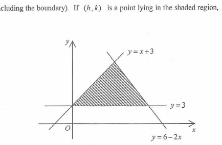

Inequalities & Linear Programming
The figure shows a shaded region (including the boundary). The region is defined by the inequality \(2x + y \le 6\). If \((h, k)\) is a point lying in the shaded region, which of the following are true?
Original Figure

Interactive Region Explorer
Drag the point \((h, k)\) inside the shaded region. Observe which statements hold true.
Step-by-Step Reasoning
The shaded region is defined by \(2x + y \le 6\). This means any point \((h, k)\) in the region must satisfy:
\(2h + k \le 6\)
Hint: The inequality describes a half-plane bounded by the line \(2x + y = 6\).
From \(2h + k \le 6\), rearrange to make \(h\) the subject:
\(2h \le 6 - k\)
Since \(k \ge 0\) is not necessarily true, we cannot simply divide. Instead, test extreme cases:
If \(k\) is very large, \(h\) must be very small or negative. But can \(h > 3\)?
Suppose \(h > 3\). Then \(2h > 6\). Since \(k\) must be at least 0, \(2h + k > 6\), which violates \(2h + k \le 6\). Hence \(h\) cannot exceed 3.
Statement I is true.
Hint: The maximum possible \(h\) occurs when \(k = 0\), giving \(h = 3\).
From \(2h + k \le 6\), rearrange to make \(k\) the subject:
\(k \le 6 - 2h\)
Since \(h \ge 0\) is not guaranteed, \(6 - 2h\) could be greater than 6. However, the region includes points with \(x \ge 0\) and \(y \ge 0\) in the first quadrant. The maximum \(k\) occurs when \(h = 0\), giving \(k = 6\).
Could \(k\) exceed 6? If \(k > 6\), then \(2h + k > 6\) even if \(h = 0\). This violates the inequality. So \(k \le 6\).
Statement II is true.
Hint: The y-intercept of the line \(2x + y = 6\) is 6. The region lies below this line.
We need to check if every point in the region satisfies \(h + k \le 4\).
Consider the point \((0, 6)\): it satisfies \(2(0) + 6 = 6 \le 6\), so it is in the region. But \(0 + 6 = 6 > 4\).
Thus Statement III is false.
Hint: The line \(x + y = 4\) is different from \(2x + y = 6\). The region extends above \(x + y = 4\) near the y-axis.
Conclusion: Only statements I and II are true. Therefore, the answer is A. I and II only.
HKDSE Mathematics – Interactive Solution · 2012 Paper 2 Q36